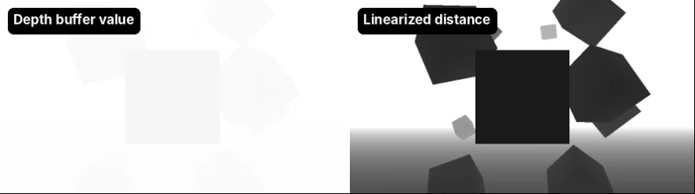

Advanced Metal
Depth Testing#
We turned on the depth buffer in Coordinate Systems and moved on. It deserves a closer look, because several later techniques, shadows above all, depend on understanding exactly what it stores.
How the test works#
The depth attachment stores one value per pixel. For every fragment the GPU compares the fragment's depth with the stored value using the compare function of the current depth-stencil state. If the test passes, the fragment is kept, and if depth writing is enabled, its depth replaces the stored one. If it fails, the fragment is discarded.
The test conceptually runs after the fragment function. In practice GPUs run it before whenever they can (early depth testing), skipping the fragment function for hidden pixels. Apple GPUs go further with hidden surface removal: for opaque geometry they work out the visible fragment for each pixel first and shade only that one.
Compare functions#
MTLCompareFunction |
Fragment passes when |
|---|---|
.less |
its depth is less than the stored depth |
.lessEqual |
less than or equal |
.equal |
equal |
.greater, .greaterEqual |
greater (or equal) |
.notEqual |
different |
.always |
always. This is the default, meaning no depth test |
.never |
never |
let descriptor = MTLDepthStencilDescriptor()
descriptor.depthCompareFunction = .less
descriptor.isDepthWriteEnabled = true
let depthState = device.makeDepthStencilState(descriptor: descriptor)!
A state with testing on and writing off is common: isDepthWriteEnabled = false lets fragments be hidden by existing geometry without affecting the buffer. Transparent objects and particle effects use it.
Depth-stencil states are cheap, immutable objects. Create the handful you need at startup and switch between them with encoder.setDepthStencilState.
The values are not linear#
The depth buffer does not store distance. After the projection matrix and the perspective divide, depth in Metal is
depth = far * (z - near) / (z * (far - near))
for a point at distance z in front of the camera. It is 0 at the near plane and 1 at the far plane, but in between it is strongly non-linear. With near 0.1 and far 100, a point just 1 unit away already has depth 0.9, and at 10 units it is 0.99. Most of the precision is spent close to the camera, which is where the eye notices errors most.
Visualizing depth#
The built-in [[position]] input of a fragment function contains the pixel coordinates in x and y and the depth in z:
fragment float4 fragment_depth(VertexOut in [[stage_in]]) {
return float4(float3(in.position.z), 1.0);
}
Almost everything is white unless you are very close. To see something useful, convert back to linear distance:
static float linearizeDepth(float depth, float near, float far) {
return near * far / (far - depth * (far - near));
}
fragment float4 fragment_depth(VertexOut in [[stage_in]]) {
float distance = linearizeDepth(in.position.z, 0.1, 100.0);
return float4(float3(distance / 100.0), 1.0);
}
Keep this function. Screen-space effects such as SSAO need it.

Z-fighting#
When two surfaces are nearly coplanar, their depth values round to the same number and the winner flips from pixel to pixel, producing a flickering stripe pattern called z-fighting. Remedies:
- Do not place surfaces that close. A small offset that nobody notices is the simplest cure.
- Push the near plane out. Going from 0.01 to 0.1 gains a lot of precision.
- Use a 32-bit float depth buffer.
.depth32Floatis supported everywhere in Metal and is what we use..depth16Unormsaves memory at the cost of precision. - Use a depth bias for decals and similar:
encoder.setDepthBias(_:slopeScale:clamp:)nudges the depth of what you draw next.
Reverse-Z#
Floating-point numbers have the most precision near 0, and the perspective mapping needs the most precision near 1. The two can be made to cancel by flipping the range: map the near plane to 1 and the far plane to 0, clear depth to 0, and test with .greater.
view.clearDepth = 0.0
descriptor.depthCompareFunction = .greater
// and swap near and far when building the projection matrix
This reverse-Z setup gives almost uniform precision over huge view distances and is standard in modern engines. It works in Metal precisely because NDC depth runs from 0 to 1. We keep the conventional direction in this series so that the code stays easy to compare with other material.
Exercises#
- Draw the scene with
.alwaysand explain the result in terms of draw order. - Put two quads 0.0001 apart and move the camera away until they fight. Then try each remedy.